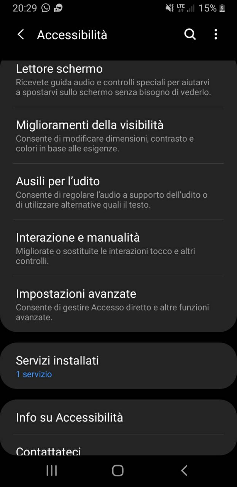

Accessibilità
- Lettore schermo
- miglioramento della visibilità
- ausili per l'udito
- interazione e manualità
- blocco direzionale
- etichetta vocale
all'interno del lettore schermo si trova un assistente vocale che fornisce un feedback parlato per gli
utenti non vedenti o ipovedenti. ad esempio, descrive cosa è possibile toccare, selezionare e attivare.
nei miglioramenti della visibilità abbiamo l'inversione del colore per i daltonici, la regolazione del
colore che serve per chi ha difficoltà a vedere un colore specifico, poi abbiamo il filtro colore che
serve ha semplificare la lettura del testo.
gli ausili per l'udito servano a controllare l'audio a supporto dell'udito o di utilizzare alternative
tipo il testo. all'interno cè l'audio mono cioè passa dalla modalità stereo a mono. in più la
disattivazione di tutti i suoni.
interazione e manualità migliora o sostituisce le interazioni tocco come ad esempio bloccare i pulsanti
indietro, home e applicazioni recenti, per la tastiera e per un'area selezionata dello schermo.
il blocco direzionale serve a sbloccare lo schermo trascinando le dita in una serie di 6/10 direzioni
alto,basso,sinistra,destra. ma i migliori modi per proteggere il telefono sono la password, il pin o il
segno.
l'etichetta vocale serve per scrivere registrazioni vocali nei tag NFC per forire informazioni quando
siete nelle vicinanze. i tag sono acquistabili separatamente e possono essere associati a oggetti o
posizioni utilizzati regolarmente.
Ogni telefono ha le sue accessibilità più il telefono è recente e migliori sono.
